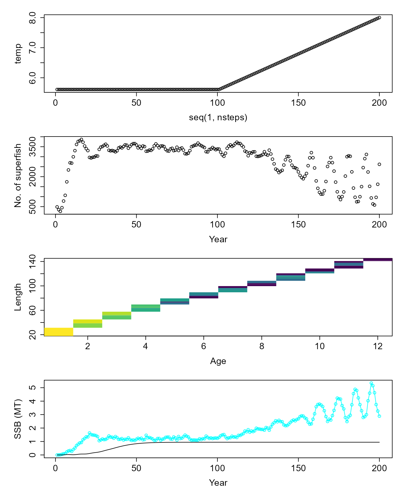

Simulating a fish population with fishing
Jaideep Joshi
28 March 2022
fished_population.Rmd
params_file = "../params/cod_params.ini"To simulate a fished population, we start with creating a fish and constructing a population from it, as usual.
fish = new(Fish, params_file)
# fish$par$Bhalf = 3.65e8
#
# fish$par$growth_model_name = "Dankel22"
# fish$par$maturation_model_name = "Dankel22"
# fish$par$mortality_model_name = "Dankel22"
# fish$par$recruitment_model_name = "BevertonHoltDirect"
fish$init(1.93e3, 5.61)
fish$par$print()
fish$get_state()## [1] 0.00000000 1.00000000 0.00000000 1.00000000 19.48806599 0.05906178
pop = new(Population, fish)
pop$par$n = 2e6 # Each superfish contains so many fishSet fishing parameters
Once we have created a population, we can set the fishing parameters:
- Harvest proportion - the proportion of fish that are allowed to be harvested every year
- Minimum size limit - the size below which fish cannot be harvested
The most important step is to set the simulate_bio_only
flag, because simulating the socioeconomic dynamics requires additional
steps, which we will show in another vignette.
pop$set_harvestProp(0.3) # Harvest
pop$set_minSizeLimit(45) # Only fish above 45 cm length can be harvested
pop$par$simulate_bio_only = T # VERY IMPORTANTInitialise and simulate the population
We again simulate a population by continuously updateing
it. Each update performs 1 year of simulation, implementing the
processes of maturation, growth, mortality, and reproduction for each
fish in the population.
This time, we also provide a dynamic temperature timeseries to the population, wherein the first 100 years have a fixed temperature of 5.61 degC, and in the next 100 years, temperature increases linearly to 8 degC.
pop$init(1000, 1.93e3, 5.61) # initialize the population with 1000 agents (superfish)
pop$verbose = T
nsteps = 200 # Let's simulate for 200 years
nfish = numeric(nsteps) # Let's keep track of the number of superfish
nfish[1]=1000 # Since we initialized the population with 1000 superfish
cnames = pop$colnames
dat = data.frame(matrix(ncol=length(cnames), nrow=0))
colnames(dat) = cnames
temp = rep(5.61, nsteps)
temp[(nsteps/2+1):nsteps] = seq(5.61,8, length.out=nsteps/2)
for (i in 1:nsteps){
v = pop$update(temp[i]) # Update all fish over 1 year
dat[i,] = v # some book-keeping
nfish[i] = pop$nfish()
}
# for (i in (nsteps/2+1):nsteps){
# v = pop$update(temp[i]) # Update all fish over 1 year
# dat[i,] = v # some book-keeping
# nfish[i] = pop$nfish()
# }
d = pop$get_state()
dist = table(d$age, d$length)
par(mfrow = c(4,1), mar=c(5,5,1,1), oma=c(1,1,1,1), cex.lab=1.5, cex.axis=1.5)
plot(temp~seq(1,nsteps))
plot(nfish~seq(1,nsteps,1), ylab="No. of superfish", xlab="Year")
image(x=as.numeric(rownames(dist)), y = as.numeric(colnames(dist)), z=log(1+3*log(dist)), col=scales::viridis_pal()(100), xlab="Age", ylab="Length")## Warning in log(1 + 3 * log(dist)): NaNs produced
res = simulate(0.3, 45, F)
matplot(cbind(dat$ssb/1e9, res$summaries$SSB[1:nsteps]/1e9), ylab="SSB (MT)", xlab="Year", col=c("cyan", "black"), lty=1, type=c("o","l"), pch=1)